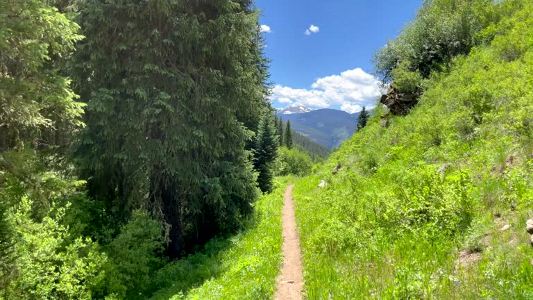
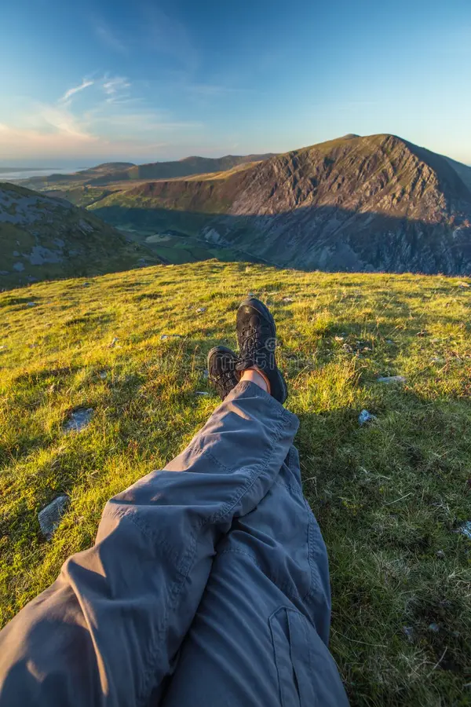
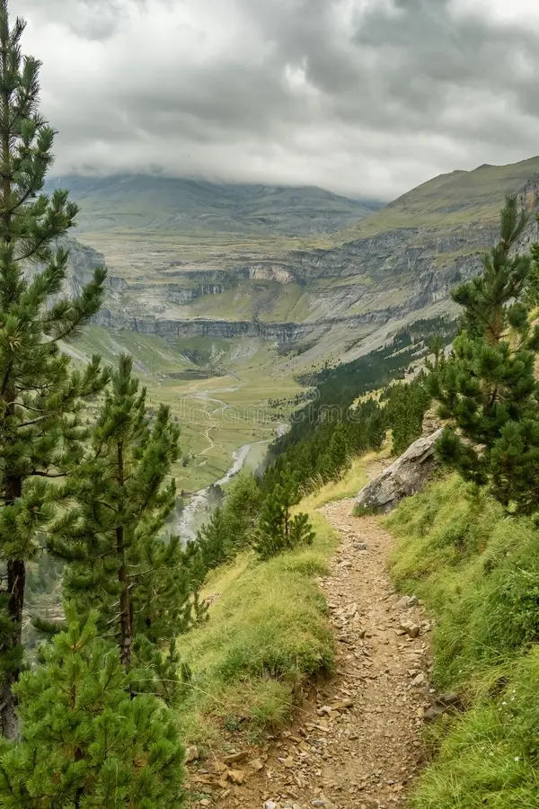
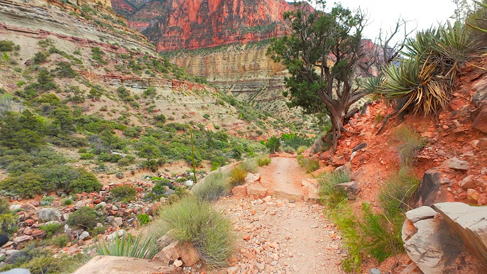
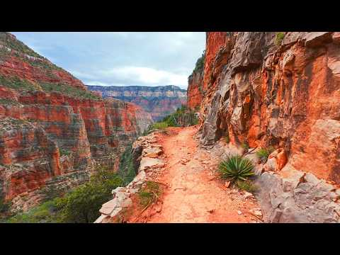
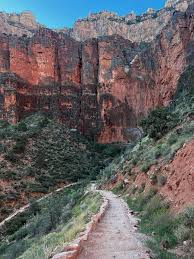

What
Hiking is one of my favorite hobbies because it gets me outside and away from screens for a while. It basically means walking trails in nature. Some trails are short and easy while others can take a few hours and have a lot of hills.
One of the things I like most about hiking is that every trail feels different. Some trails go through forests, some have mountain views, and some end at waterfalls.

Image prompt: realistic hiking trail through a green forest with sunlight and mountains in the distance.
| Trail Type | Distance |
|---|---|
| Easy Trail | 1-3 miles |
| Moderate Trail | 3-6 miles |
| Difficult Trail | 6+ miles |
Who
Anyone can enjoy hiking. You do not have to be an expert to start. Some people hike for exercise while others do it to relax or enjoy the scenery.
I usually hike with friends or family on weekends. It is also something people can do alone if they want a quiet break from busy schedules.

Image prompt: group of hikers walking on a mountain trail wearing backpacks during daylight.
- Students looking for outdoor activities
- Families spending time together
- Friends exploring new trails
When
Hiking can be done during any season, but spring and fall are usually the most comfortable. The weather is cooler and the scenery looks really nice during those months.
Summer hikes are still popular but starting earlier in the day helps avoid the heat.

Image prompt: autumn hiking trail with orange and red leaves and sunlight through the trees.
- Spring – cooler weather and blooming plants
- Summer – long daylight hours
- Fall – colorful leaves and great views
Where
Hiking trails can be found almost everywhere. Many local parks have small trails, while national parks and mountain areas have longer and more challenging ones.
Some of the best trails include scenic overlooks or waterfalls which make the hike even more rewarding.

Image prompt: scenic mountain overlook view from a hiking trail with clouds and large valley.
- National Parks
- State Parks
- Local nature preserves
How
Getting started with hiking is simple. Comfortable shoes, water, and a safe trail are usually enough for beginners.
As people hike more often they may bring extra gear like backpacks, maps, or hiking apps.

Image prompt: hiking gear including boots, backpack, water bottle, and trail map.
Why
One of the biggest reasons I enjoy hiking is that it helps clear my mind. Spending time outdoors can be very relaxing and helps reduce stress.
It is also a good way to stay active without feeling like a normal workout.

Image prompt: sunrise mountain landscape with a hiker standing on a cliff looking over the valley.
- Good physical activity
- Relaxing outdoor environment
- Beautiful scenery
AI Prompts
The image descriptions used to create the pictures are written in italics under each image on the page.